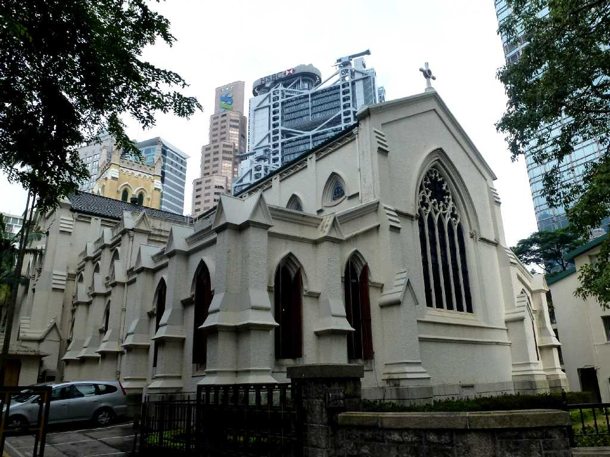
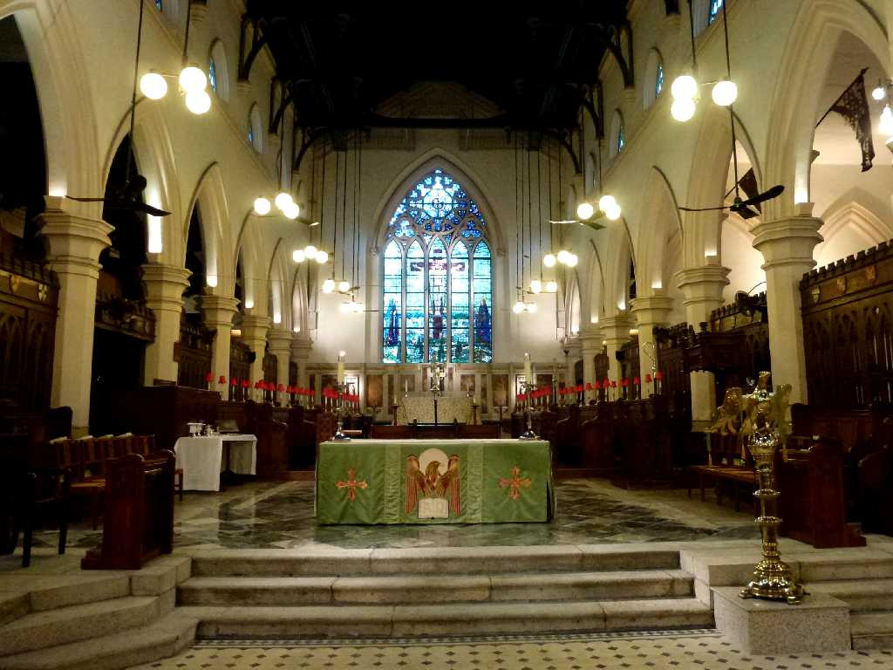
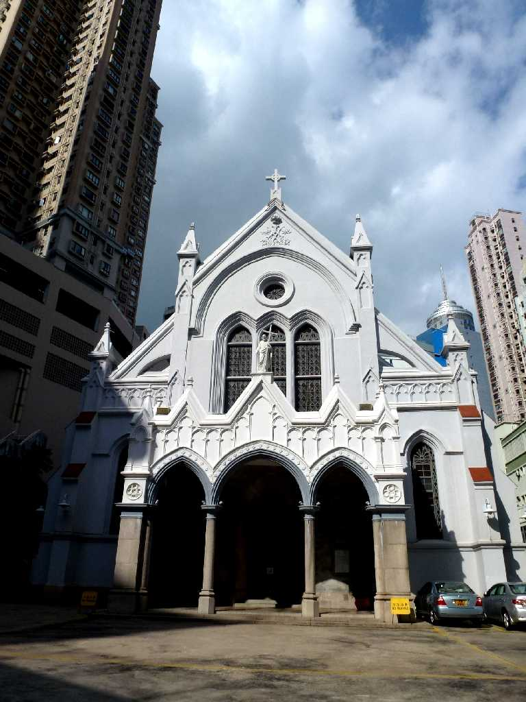
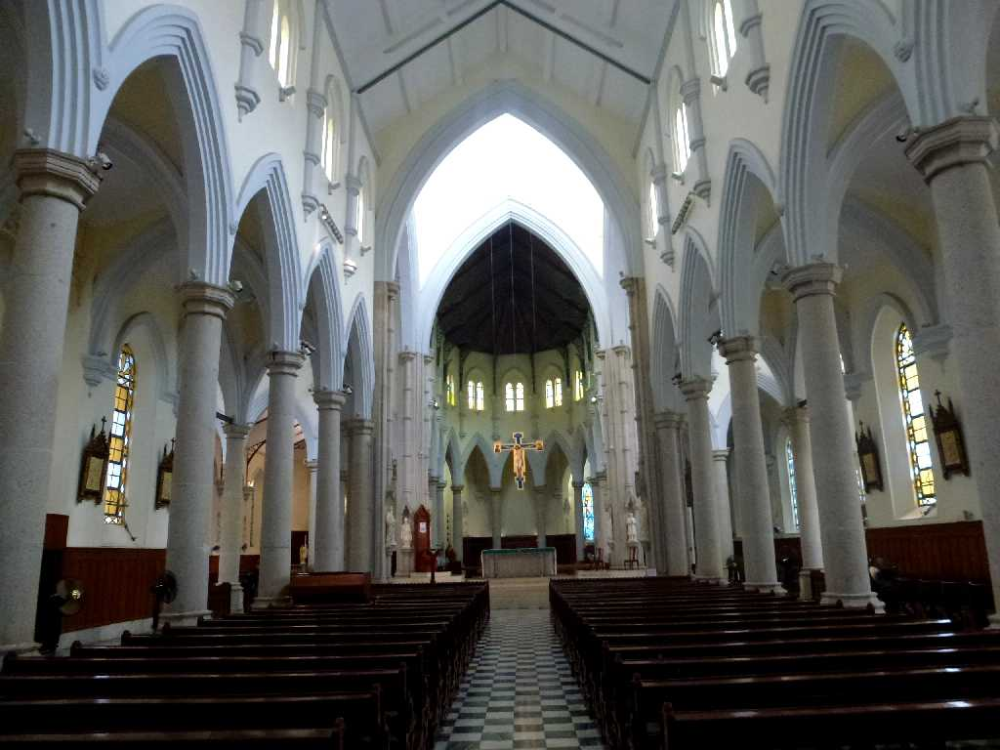

St. John Cathedral Hong Kong 香港
１８４８年に創られた現存する香港最古の西洋建築物であるイギリスゴシック様式の聖ヨハネ主教座聖堂

Altar St. John Cathedral

Catholic Cathedral Hong Kong
１８８８年に創られた１,０００名を収容できるゴシックリヴァイヴァル様式の聖母無原罪主教座堂

Catholic Cathedral